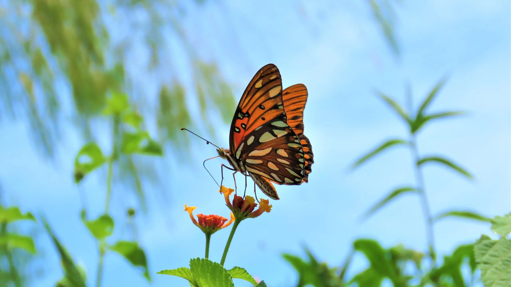

Mundo das Borboletas
Por que vemos borboletas cada vez menos?
Isso acontece pois elas preferem espaços abertos com flores, bosques, prados, jardins e florestas pouco densas.
É mais freqüente nas zonas baixas,
mas pode ser encontrada nas regiões costeiras e no topo da Serra da Estrela.
Com isso,os cientistas acreditam que os insetos estão sumindo devido a remoção de vegetação nativa, que abre
espaço para a agropecuária. O uso indiscriminado de pesticidas também parece colaborar para o cenário.
O fato dos insetos aquáticos passarem ilesos no estudo não significa que eles estão fora de risco.
